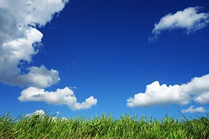

Climate Clues
Weather News Now
☰ Menu
Today
Weekend
7-Day View
Weather Gallery
Contact Us
Search
Weather Gallery
Lightening hitting Preston.
Sunset on an overcast day in Idaho.

Partly cloudy with blue skies.
Preston looks beautiful in the rain.
Snow & trees in Preston.
Sunny day over a river.